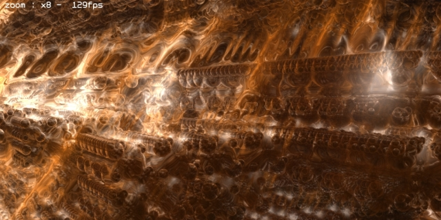
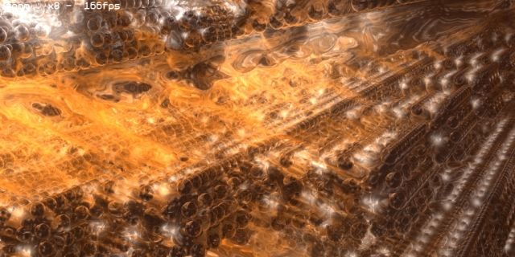
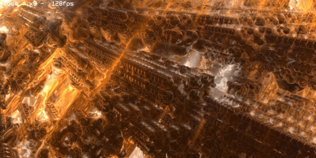

20070818 - Deferred Fractal Environment Shading
This is one of those ideas which I was sure wouldn't work correctly, but I had to try just to see what would happen. I took my compositing pipeline and differed the shading and fractal environment mapping until the very end, only compositing the parameters when drawing the cells from back to front.
The results, well they are strange indeed. This idea has promptly found a place in my round file (the trash), but at least it looked cool.


